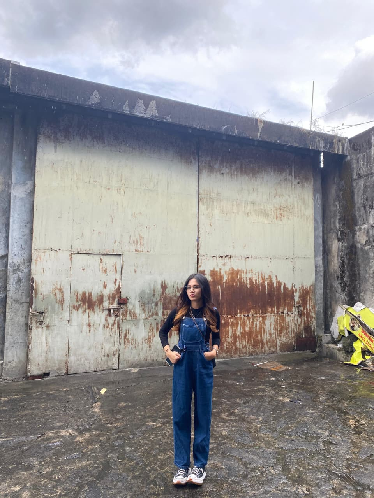

"Menjalani Hari dengan Sederhana, Setiap Langkah Kecil Memiliki Arti"
Kezia Aurelya Mbatono
Biodata Saya
Hai semua! Perkenalkan Nama saya Kezia Aurelya Mbatono yang biasa disapa Key.
Saya lahir di Manado pada 08 September 2005 dan saat ini berdomisili di Malalayang.
Saat ini, saya sedang menempuh pendidikan sebagai Mahasiswa Aktif Semester 4 di
Universitas Sam Ratulangi Manado.
Hobi yang paling saya gemari adalah bernyanyi. Dengan menjalani hari secara sederhana,
saya percaya bahwa setiap langkah kecil memiliki arti tersendiri dan akan membawa saya
lebih dekat pada tujuan yang ingin dicapai.
Keterampilan Saya
Saya memiliki keterampilan kreatif yang saya kembangkan dengan tekun: Fotografi & Videografi untuk menangkap momen indah, Editing Video dengan tools profesional, dan Bernyanyi sebagai cara mengekspresikan jiwa.

Fotografi & Videografi
Menangkap momen indah melalui foto dan video.

Editing Video
Mengolah footage menjadi karya profesional.

Bernyanyi
Ekspresi jiwa melalui harmoni suara.